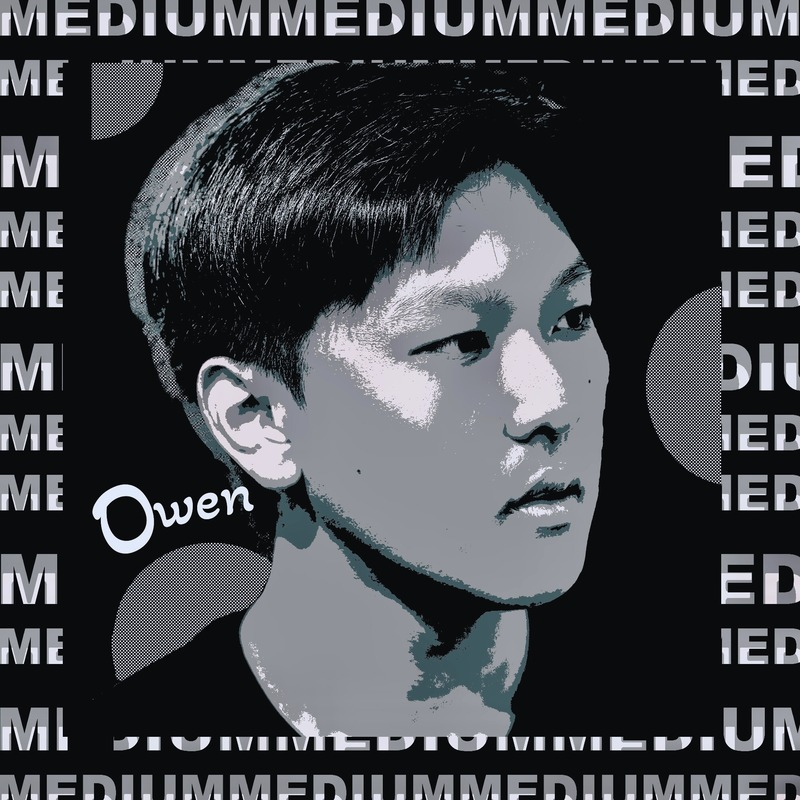
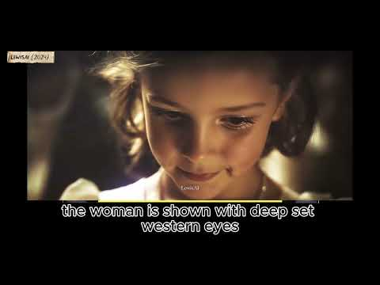

Portfolio
2024–2026
7 projects
Select two projects to compare.
Design2025
Policy & data2024

Media & research2025
Design2024
Policy & data2025
Policy & data2026

Media & research2026
No matching projects.